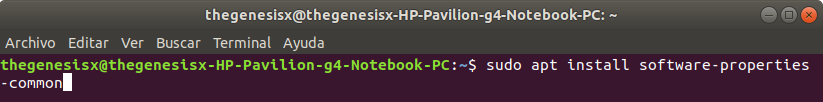
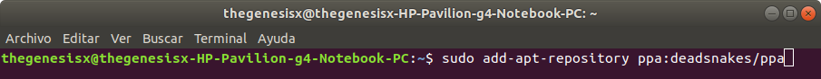
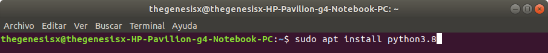
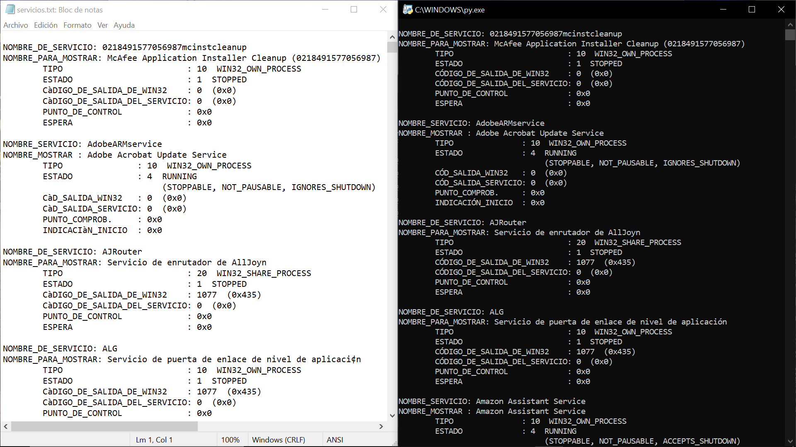
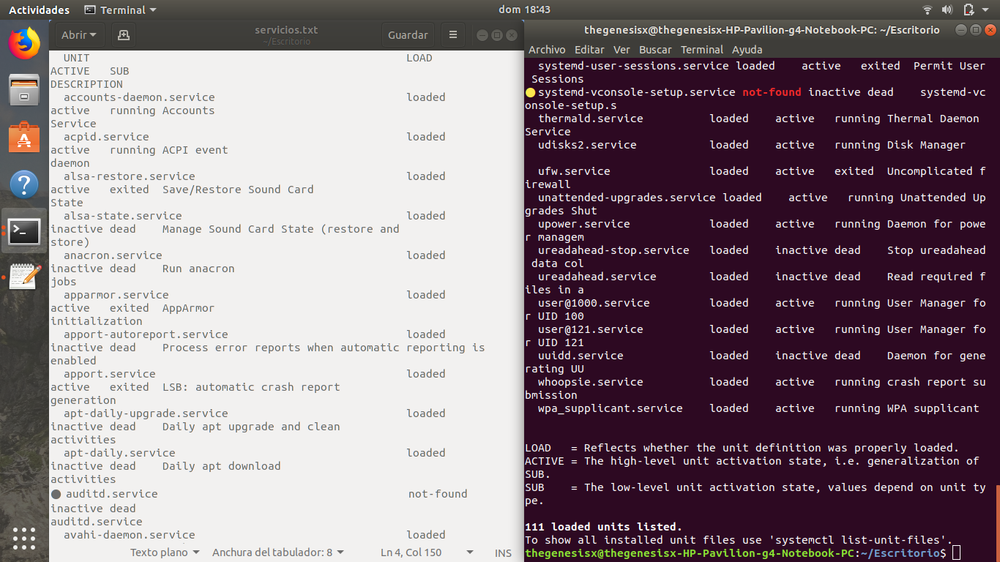

Instrucciones
- Desarrollar un programa para ver los servicios de Windows y Linux.
Requerimientos
- La última versión de Python instalado en ambos Sistemas Operativos.
Comencemos
- Lo primero será instalar Python en Windows 10. A la fecha, la ultima versión corresponde a la 3.8.1, y puedes acceder a la liga de descarga aquí.
- Nos dirigiremos a la parte inferior, y seleccionaremos la opcion
Windows x86-64 executable installer
si tu computadora es de 64 bits. Si tu computadora es de 32 bits, deberás elegir la opciónWindows x86 executable installer
. - Nos aseguramos de tener seleccionado el recuadro de
Add Python to PATH
,ya que nos facilitaría bastantes procesos en un futuro, para todo tipo de cosas. Y posteriormente seleccionamosInstalar ahora
. Una vez terminada la instalación, cerramos el asistente de instalación sin más. - Lo que haremos será abrir la terminal. Para esto podemos presionar el boton de Windows de nuestro teclado y escribir
Terminal
, o dar clic en el menú de opciones ubicado en la esquina inferior izquierda y escribir la misma opción mencionada. Ahora procederemos a ejecutar los siguientes comandos uno por uno, en el orden presentado en las imagenes. - Finalmente podremos crear el programa para mostrar los servicios tanto de Windows como de Linux.
El código es el siguiente:
Si no estás seguro acerca de los bits de tu computadora, puedes consultarlo dando clic derecho en el botón
de inicio de Windows, seleccionando la opción Sistema
, y en el campo denominado Tipo de sistema
podrás verificar
este dato.
Si el instalador solo nos muestra las opciones de reparar o desinstalar, querrá decir que ya tenemos instalado Python.
Ahora procederemos a instalar Python en Linux - Ubuntu.
En sistemas operativos como Ubuntu, la instalación de programas suele ser completamente distinta
a las de Windows. En este caso tendremos que recurrir a la línea de comandos (también conocida como consola o terminal) para poder proceder.



Lo que hace el programa es reconocer en qué Sistema Operativo se está ejecutando, y posteriormente ejecutar un comando para obtener una lista completa
de servicios: activos, detenidos, y en pausa, para escribirlos en un documento de texto plano y también mostrarlos en pantalla mediante la consola.
Para ejecutar
en Windows, basta con dar doble clic al programa; para ejecutar en Linux, podemos abrir la consola de comandos, dirigirnos hacia la carpeta en donde tenemos el
programa, y ejecutarlo mediante el comando python3 services.py
WINDOWS:

LINUX:
